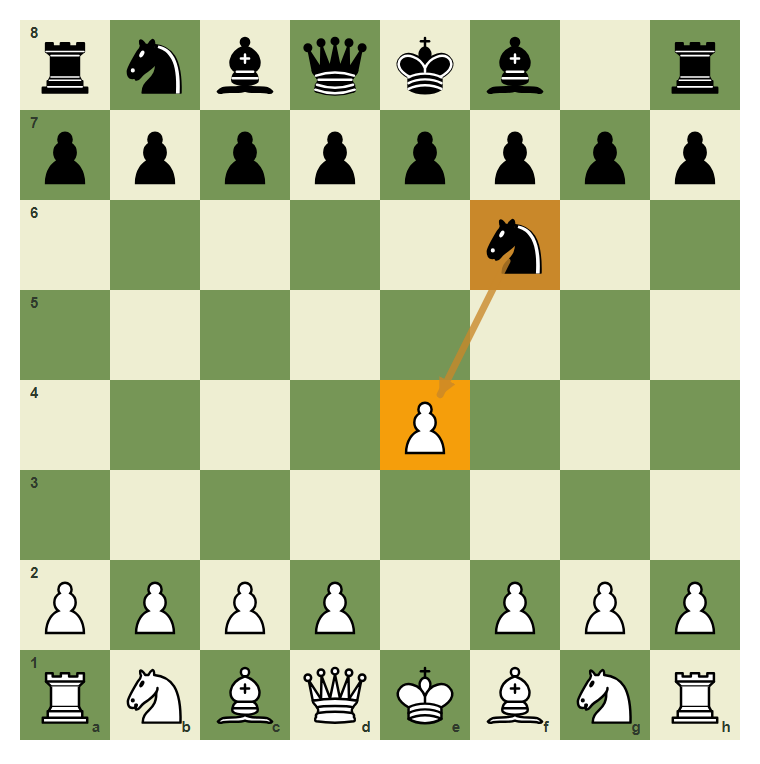
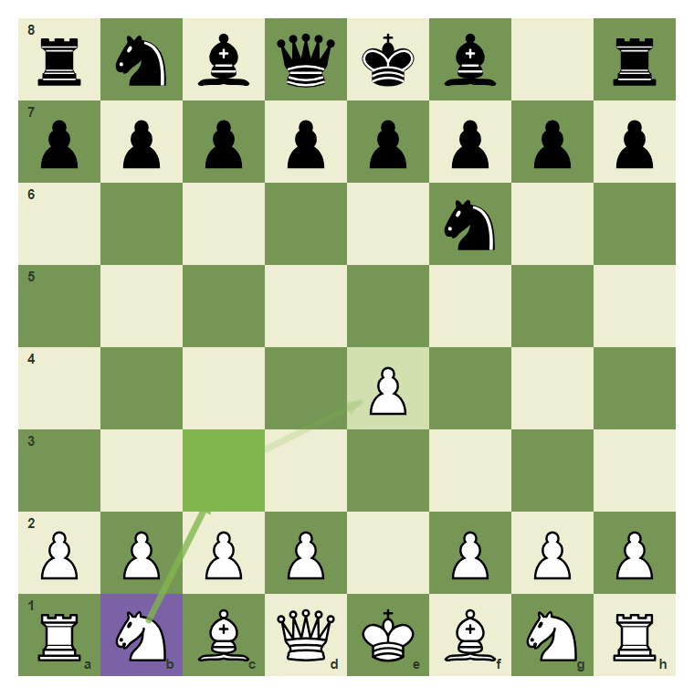
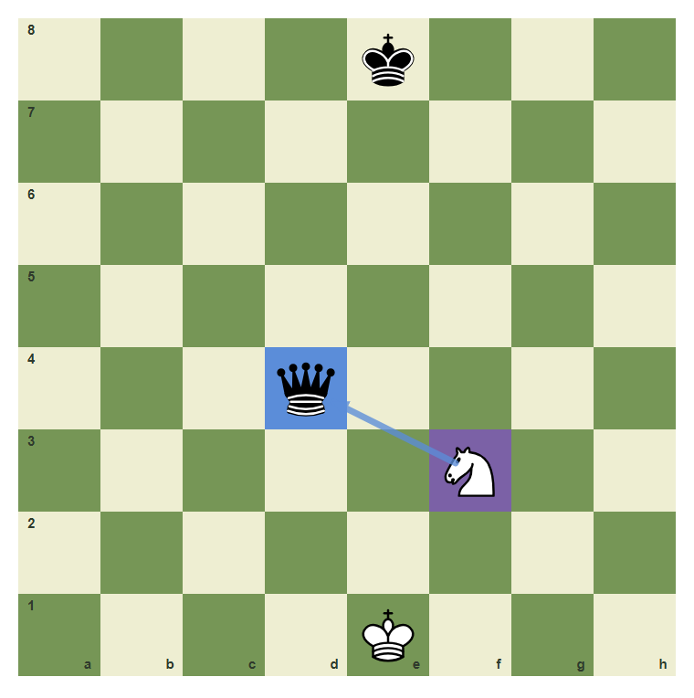
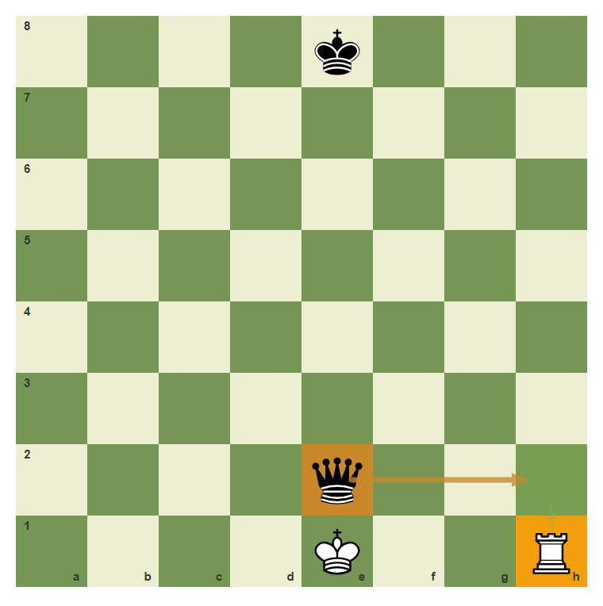
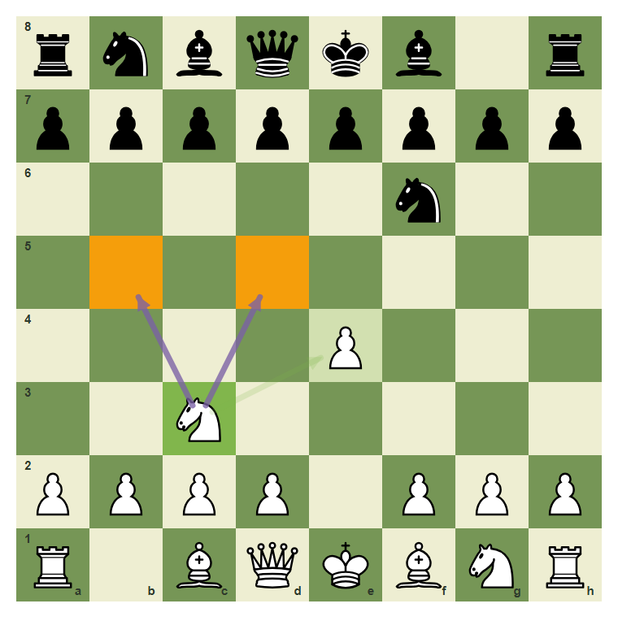
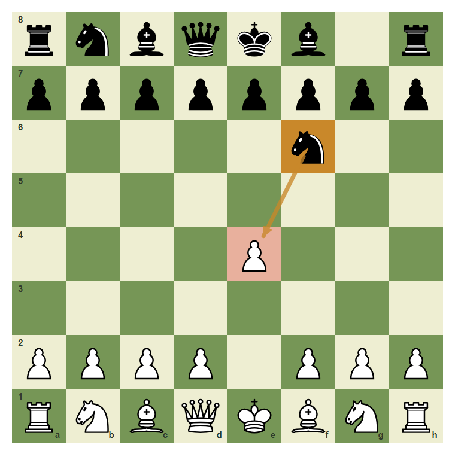

One-Move Attacks And One-Move Defenses
See the opponent threat and answer it simply.
- Notice direct one-move attacks.
- Choose a simple defense.
- Find moves that attack and defend at the same time.
One Move Is Enough
A beginner blunder often has a one-move story: one piece attacks, one piece is attacked, and nobody answered. Your job is to notice the story before it becomes material loss.
The e4 pawn is attacked

The knight on f6 points at e4. White should notice the attack.
Defend with b1-c3

The move b1-c3 adds a defender to e4 while developing a knight.
A loose queen can be attacked

The knight on f3 attacks d4. Big targets count too.
Moving away is a defense

If the rook is attacked, one answer is to move it to a safe square.
Attack and defend together

The knight on c3 defends e4 and also looks toward d5 and b5.
Defend the attacked pawn
The pawn on e4 is attacked. Develop the knight from b1 to c3.

Common mistake: ignore the direct attack
If White plays a random move, Black can take e4. One-move threats must be answered.

The arrow from f6 to e4 is the warning.
Chapter Checkpoint
A simple defense can be:
A simple defense can be:
A developing move is especially good when it also:
A developing move is especially good when it also:
If your opponent attacks a pawn, you should:
If your opponent attacks a pawn, you should: